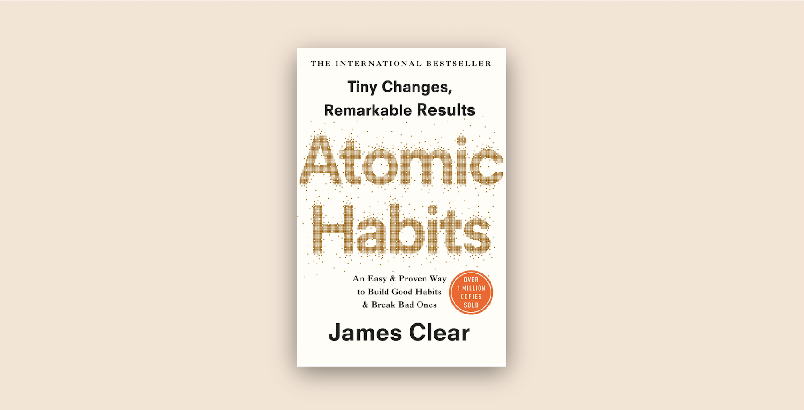
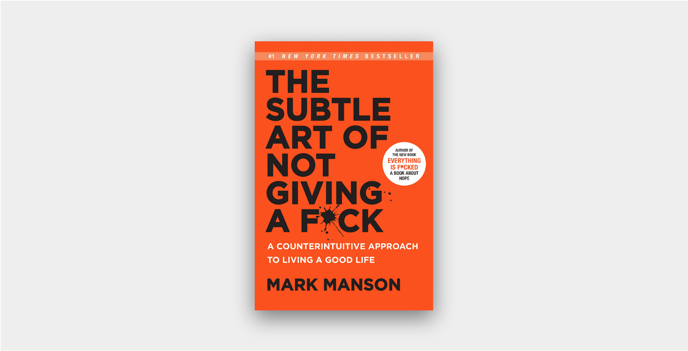

July 2, 2020
Shoe Dog (P. Knight)

Businesses are hardly ever overnight successes, and the Nike empire is no exception. Although Nike is such a household name and a strong symbol of athletic prowess today, it wasn’t like this from the beginning. Shoe Dog is the honest story of how Nike got started and all the obstacles author Phil Knight faced in turning his big “Crazy Idea” into a leading sporting goods company.
I thoroughly enjoyed this memoir and reliving every year of Phil’s life with him from the 1960s to 1980. I loved learning about his business endeavors, as well as his family and romantic relationships between the pages. I admired how much resilience, passion, and commitment the entire founding team exhibited, time and time again, against all kinds of players in the market and a constantly overdrawn bank account. Tying all
May 31, 2020
Atomic Habits (J. Clear)
Reading this book while many parts of the country are still in quarantine, many workers have lost their jobs or are working on reduced hours, and many normal lifestyles are shaken and disrupted has been very timely. I am personally spending a lot of time reflecting, finding new identities, and trying to re-instill order among the uncertainty and chaos of the world around us. In doing anything new or trying to achieve anything big, author James Clear stresses that making small, atomic changes is the reliable way to get there.
Atomic Habits is about changing people’s mindsets to recognize that having goals and motivation is not enough to achieve success. Winners and losers both have the same goals. It’s the system set to work towards those goals that makes the difference. The path to success is not glamorous and will include disappointment, boredom, and frustration, but establishing a strong system will help condition ourselves to stick to the mission and increase the odds of making it to the final mile.
Decide first the type of person you want to be to trigger the most raw, intrinsic form of motivation for self-improvement. Challenge and edit your beliefs to upgrade and expand your identity. Determine the habits required to put you in the path toward success, and incorporate these habits into your life using the Four Laws of Behavior Change: make it obvious, make it attractive, make it easy, and make it satisfying.
Three other quotes that stood out to me include:
“The problem is not slipping up; the problem is thinking that if you can’t do something perfectly, then you shouldn’t do it at all.”
This is so important. We are only human and either we will make mistakes or life will try to get in the way. I think there are two points of time where remembering this is key. One is when a bad day, a disappointing performance, or a lack of motivation hits. The other is in starting something new. In either case, it doesn’t matter if we aren’t perfect or the best. It matters more that we have the courage to get started and the resilience to rebound quickly.“Being curious is better than being smart.”
Curiosity creates desire which leads to action.“Happiness is the absence of desire.”
This was simply interesting to me as I try to better define what happiness is to me. Mark Manson describes it as derived from solving problems. James Clear here promotes it being the space between one desire being fulfilled and a new desire forming.January 19, 2020
The Subtle Art of Not Giving a F*ck (M. Manson)
Saying no is always difficult to do. I am getting better in a professional context, but there is still room for improvement. Saying no also leaves me with more immediate discomfort than the alternatives of leaving my options open or stretching myself thin in order to offer a hand in assistance to someone else. This book hits on just that. It is very difficult to live a happy, fulfilling, and successful life if we continue to entertain everything that comes our way. Instead, prioritizing what is most important and most resonant to our core values is the key to self-improvement.
"[Choose] better things to give a fuck about. Because when you give better fucks, you get better problems. And when you get better problems, you get a better life."
The idea that people are often reluctant to commit and more prone to keeping options open reminded me of the study covered in Dan Ariely's Predictably Irrational where participants sacrificed time and effort to keep multiple doors open in an experiment when they weren't confident which door gave them the highest cash value. Having more options available is often associated with more security, abundance, and positive outlook; however, the trade-off is a loss of focus and direction. Living a life giving too many fucks is living superficially, and sadly, just awful for our mental health.
Manson's five counterintuitive that he believes are beneficial to adopt are as follows:
- Responsibility: Take responsibility for everything that occurs in your life, regardless of who's at fault
- Uncertainty: Acknowledge your own ignorance and cultivate constant doubt in your own beliefs
- Failure: Discover your own flaws and mistakes so that they may be improved upon
- Rejection: Be able to both say and hear no, thus clearly define what you will and will not accept in your life
- Mortality: Pay vigilant attention to your own death and comtemplate your own mortality. This keeps other values in proper perspective
One other key takeaway for me is that happiness comes from solving problems. Our lives are full of problems, solving one leads to the creation of more. Not all problems are bad problems either. In fact, our positive experiences will continuously define what our problems are. The person we marry will be the person we fight with. The house we buy will be the house we must repair. Thus, ultimate happiness is not a single, permanent, attainable state of being. It is constantly evolving. For our lives then, instead of asking "What do you want out of life? What do you want to enjoy?", ask yourself "What pain do you want to sustain?". What struggles do you choose?
December 31, 2019
Americanah (C. N. Adichie)
A beautiful, idealistic love story blended with a heavy dose of harsh, honest realism. What started as a bright-eyed romance built upon books and fantasies of international futures was later pummeled with the challenges of growing up in a third world African country, immigrating and starting anew in foreign lands, and adopting and embracing the new identity of being "black". What better way to experience these challenges than through the thoughts of an outspoken and unabashedly opinionated main character?
For me, the start of this novel was slow, but I was soon entirely mesmerized and captivated, after main character Ifemelu immigrated to America. Her challenges and struggles were so tangible that it made me ache for her, the changes she encountered in her own life and that she observed in the life of her Aunty Uju. These hardships truly crush, mold, and harden a person. To see Ifemelu, on the one hand, firm in resisting change to preserve her cultural heritage and on the other hand, polishing and cultivating an American persona and success of her own made me so awfully proud of her growth, development, and values. This story hits close to home, especially as I am becoming increasingly more appreciative of my parents' sacrifices in their immigration story to trade for the life I have today. Beyond immigration, the perspectives on race and identity have been enlightening and powerful as well.
What I love most about Americanah is two-fold: first, excellent in-depth character studies and compelling narrative; and secondly, the bold delivery of such strong themes and messages within an exquisite and passionate love story.
December 21, 2019
Predictably Irrational (D. Ariely)
There are two main messages author Dan Ariely wants us to take away from this book about ourselves. Contrary to popular standard economic assumptions, we are not always rational thinkers. In fact, there are many emotional and societal forces that exert a lot of power over our behaviors, even though we may not be aware of them. We make all types of mistakes over and over again, because that's how we are wired to behave. And those mistakes are not always going to fix themselves or be fixed naturally by market forces. We often believe that the control of our decisions is in our own hands, but that is simply our flawed perception, and not reality. The key second takeaway though is that this is all okay. We are not helpless. Instead, it is up to us "to be more vigilant, force ourselves to think differently about these decisions, or use technology to overcome our inherent shortcomings". It is also up to businesses and policy makers to design products and policies in such a way that benefits everyone.
I thoroughly enjoyed this book, because the messages are delivered in a very actionable way. Not only does Ariely share enlightening stories and experiments to really drive his points home, he also includes tips and advice on how we can change the way we behave, now that we are more aware. Below are summarized insights from the different chapters. Check out his book and www.predictablyirrational.com for his actionable advice and to learn more about designing or getting involved with experiments.
- We don't have an internal value meter that tells us how much things are worth. Rather, we focus on the relative advantage of one thing over another, and estimate value accordingly. This can lead to a cycle of relativity, where the more we have, the more we want.
- We often make an initial decision based on what's available in the environment and then attach ourselves to that initial decision. Initial decisions help shape future behavior, both for ourselves and others.
- When something is free, we forget the downside of a transaction. We are intrinsically afraid of loss, but there is no visible possibility of loss when we choose a free item.
- Social norms are friendly requests where instant paybacks are not required. Market norms are sharp-edged exchanges with comparable benefits and prompt payments. Where social and market norms collide, trouble sets in. Even just thinking about money makes us behave more selfish and less like the social animals we are intrinsically. In the long run, social norms will make the difference.
- We often substantially underestimate the degree to which passion can change our preferences and the actions we are capable of. We should educate ourselves on how to deal with high emotions and bridge the gap between our hot and cold states.
- We often fall in love with what we own and be overly optimistic about anything that has to do with ourselves.
- We often do anything possible to keep options open and ignore the cost of doing so.
- In the absence of perfect information, we often look for social cues to help us. Expectations set up in advance then affects our judgment.
- We instinctively assume discounted items are lower quality than a full-priced item.
- We've become more distrustful, even though the total value to society is maximal when we all cooperate and trust is high. However, we tend to think about short-term benefits and our own immediate needs. And if one person lies or scams, the distrust is infectious and everybody loses.
- When given the opportunity to cheat, many honest people will cheat, but only a little bit. Once tempted to cheat, they are not as influenced by the risk of being caught. If we are reminded of morality at the moment we are tempted, then we are more likely to remain honest. Cheating is a lot easier when it's a step removed from money.
- We sometimes sacrifice our own pleasure for reputational utility.
June 21, 2019
Everything Happens for a Reason: And Other Lies I've Loved (K. Bowler)
One thing that is becoming more and more clear to me in recent months is the finitude of life. This crosses my mind the most when I think of my parents and other loved ones and how I could never have enough time on this earth with them.
In this memoir, author Kate Bowler captures her experience and thoughts as she becomes unexpectedly diagnosed with Stage IV colon cancer at the young age of 35, when her career is taking off, her married life is full of bliss, and her family has newly welcomed a young baby boy. This diagnosis in particular mystifies Bowler as the entirety of her religious and professional training on the prosperity gospel has always preached that as long as you have faith, God will reward you with security and prosperity. What you give to the world will come back to you like a boomerang. Life is supposed to be fair: the good should be rewarded and the bad should be punished. So now that she is punished with cancer and illness, there must have a reason. How has she failed? Why her?
As she struggles to understand the turn of events in her life, she does not find all the answers but instead, learns to be open and to accept. People of different beliefs may phrase it in various ways (ways that may even sound undermining and belittling, from responders to her New York Times column), but she internalizes at the end of the day to "stop complaining and accept the world as it is". One last conversation she references at the end of her memoir resonates with me. While she may have become more accepting, it by no means symbolizes a surrender or resignation. Instead, regardless of how short or unpredictable life may be, how many times "we think we have it locked down and it comes undone ... don't skip to the end".
Continue to support and keep up with author Kate Bowler through her other books and blog at www.katebowler.com.
October 1, 2018
Sharp Objects (G. Flynn)
A parent is a child’s first teacher and probably biggest influencer, regardless of whether we as children actively strive to follow in their footsteps or whether we stubbornly avoid any remote association to them. The apple does not fall very far from the tree.
Sharp Objects tells a thrilling, dark, and defiant story about the strong impact parents have on children and the particular scenario of that impact being disastrously damaging due to intensifying generations of psychological impairment. Author Gillian Flynn focuses specifically on motherhood. She challenges the broadly accepted idea that women are innately good and selfless — natural nurturers — by “giving women permission to be bad,” as an individual and as a mother. In the sheltered, snow-globe-turned-ghost-town of Wind Gap where most nice women are teachers or mothers, a woman was the last to be suspected of being the serial killer of two young girls in tragic and ruthless murders. After extensively investigating the cases and blindly pursuing male suspects, Wind Gap police and residents refused to acknowledge what could’ve been a deception all along.
Flynn stresses that being a good mother is not often as portrayed. Contrary to popular belief, it is not a skill that reliably kicks in or is awakened upon the welcoming of a child. Sometimes, it doesn’t kick in fully or at all. Not every women will understand or learn how to care for a child in a healthy way and also, not every women will make that conscious decision to do so. There are a variety of reasons why a mother may be challenged in her abilities to care for her child. Sharp Objects raises awareness of a less common and easily undetectable mental disorder called Munchausen syndrome by proxy. Children who are victims of MSP endure a constant lifetime of abuse from their caretakers for the illusion of being an attentive and doting parent. These parents intentionally sabotage children’s health by causing fake medical problems for their own emotional gratifications. It’s sick. It’s sad. It’s puzzling, but it happens, and it’s interesting to discuss and a great problem to shine a scrutinizing spotlight on.
September 7, 2018
South of the Border, West of the Sun (H. Murakami)
2018 has been a continuation of the Haruki Murakami craze that started last year with Colorless Tsukuru Tazaki and His Years of Pilgrimage and Kafka on the Shore. They were my first exposure to both his contemporary, realistic fiction works and his insane, magical realism adventures. This year, I started with What I Talk About When I Talk About Running, then moved onto Norwegian Wood, and now most recently, South of the Border, West of the Sun.
It is broadly known that Murakami's books tend to feature similar themes, with similar characters and similar imageries. Without fail, South of the Border, West of the Sun also features a confused, introspective central Japanese male character, who is plagued by a childhood love of the past. He is a small-town boy, who eventually moves to Tokyo, enjoys swimming, listening to records, and frequenting jazz clubs, and his lover is a mysterious woman, who has a quiet and enticing beauty, never manages to connect with anyone else, and eventually develops suicidal thoughts.
Unlike his other books though, Murakami deeply explores in this one the ideas of infidelity, selfishness, and choices and consequences. One of the first traits he introduces about our main characters, Hajime and Shimamoto, is that they are both the only child in their families, something uncommon during their upbringing in post-war Japan. Only children are viewed as outcasts, spoiled and standoffish, while children with siblings are open and less self-centered. While this bonds our two leads, it also isolates them from their surroundings and additionally attempts to justify the way Hajime treats the other females he encounters, which his wife Yukiko later calls him out for. Despite how he betrays his first girlfriend to sleep with her cousin or how he betrays his loving wife and daughters to chase Shimamoto, Hajime continuously plays the victim, because to him, he is a tormented soul struggling to find his own identity and to re-invent himself. As good as his intentions may be, he can't escape the ghosts of his past or the uncontrollable forces that come with it. While he is remorseful of his actions, Yukiko needs to call him out explicitly for his oversight and dismissal of other people in his life to remind him that he is not the only one dealing with demons.
"The last few weeks, I really did think I would die... That's how lonely and sad I was... You didn't know that, did you? You have never seriously given it any thought, have you? What I was feeling, what I was thinking, what I might do... You don't understand a thing."
"Most likely I don't." I said.
"And you don't ask anything," she said.
I opened my mouth to say something, but the words wouldn't come out. She was right: I never did ask her anything. Why didn't I? I had no idea.
Though Yukiko reassures us that it's not about right or wrong, I still enjoyed the way Murakami juxtaposes what society deems is the moral code against the irresistible magnetism of natural desires, while simultaneously battling all this against the passage of time, the accumulation of missed opportunities, and the inevitability of death and change. Murakami's writing is always a treat and I look forward to reading The Wind-Up Bird Chronicle before taking a hiatus from his work.